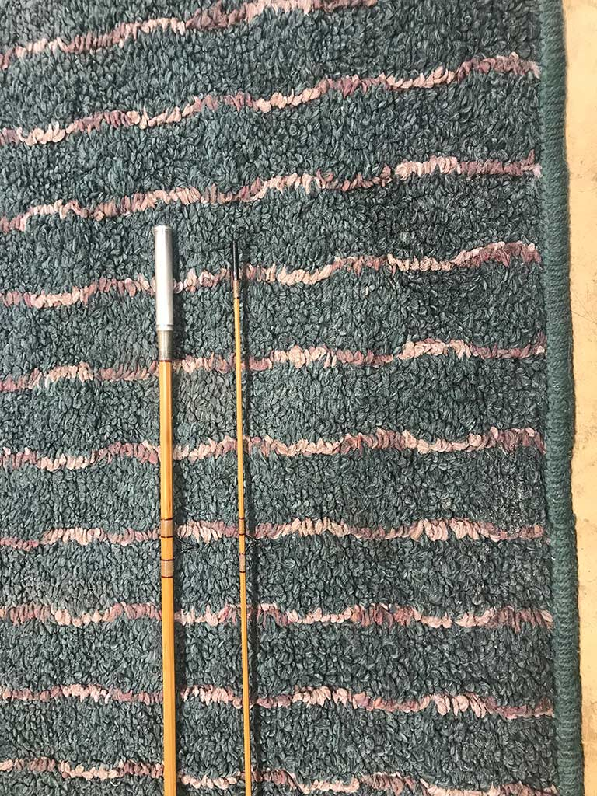
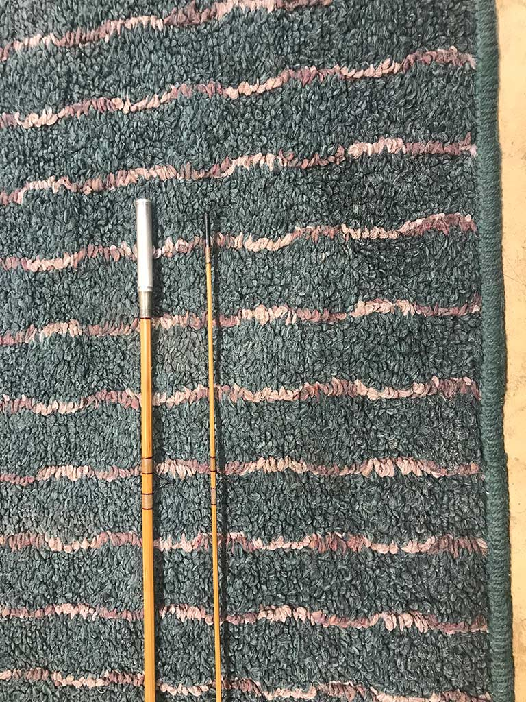

About Me
At my shop in Parker, Idaho, I passionately craft split bamboo fly rods, classic guitars, and my own drift boat — all born from my deep love of fly fishing. My heart belongs to the alpine landscapes of Idaho, Montana, Utah, and Wyoming, where I've spent countless days casting lines and soaking in nature's beauty. Even at 80 years old, I still enjoy backpacking adventures and the great outdoors.
There's something uniquely fulfilling about working with my hands in the shop, surrounded by friends. It's a space where creativity and friendships thrive.

 
